To add and subtract unlike fractions.
To understand improper and mixed fractions.
To express improper fractions into mixed fractions and vice versa.
To do fundamental operations on mixed fractions
Recap
On Anbu’s birthday function, his father, mother and uncle have bought one cake each of equal size. At the time of cutting a cake, two friends were present for the celebration. He divided the cake into 2 equal pieces and gave the pieces to them. After some time, three of his friends arrived. He took another cake and divided it into 3 equal pieces and gave the pieces to them. Still he has one more cake at home. Anbu wanted to share it among his four family members. Third cake is divided into 4 equal pieces and given to them.
Following table shows how Anbu divided the cake equally according to the number of persons.
Division of Cake |
Number of persons shared |
Each one’s share |
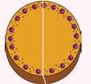 |
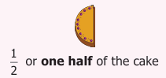
|
|
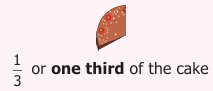
|
||
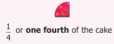
|
In the above situation, each of 3 cakes was divided equally according to the number of persons attended the function. When Anbu shared one cake to 4 persons, each one got quarter of the cake which was comparatively smaller than the share got by one person when it was divided equally between 2 and 3 persons. When the number of persons increases the size of the cake becomes smaller.
Suppose all the three cakes of equal size are shared equally with the family members of Anbu, what would be each one’s share?
Division of Cake |
Number of persons shared |
Each one’s share |
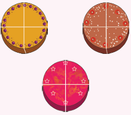 |
3 divided by 4 or three fourth of the cake |
Each one would get 3 divided by 4 of the cake. Here we have divided the whole into equal parts, each part is called a Fraction. We say a fraction as selected parts out of total number of equal parts of an object or a group. Each one’s share of dividing one cake between 2, 3 and 4 persons respectively can be represented as follows.
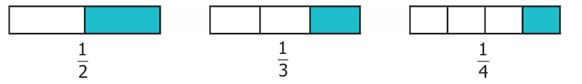
Think
If all the three cakes are divided among the total participants of the function what would be each one's share? Discuss.
Try these
![image, 1) 1) This image, represents a Circle divided into eight equal portions, in which three portions Coloured with blue colour. (2) This image, represents a rectangle, which is divided into, fiftee equal square, in which five portions are Shaded with blue Colour. (3) This image, represents where nine equal triangles ernbedded in a big triangle also, shaded. three triangles in orange colour, (4) There is image, with nine Connected hexagons in three rows where as five hexagons are coloured with green colour.](images/image22.png)
2) Look at the following beakers. Express the quantity of water as fractions and arrange them in ascending order.
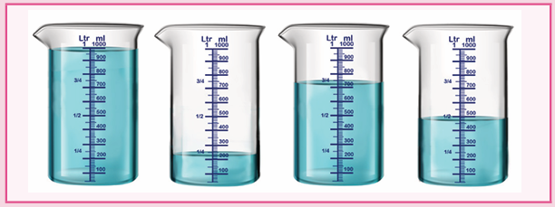
3) write the fraction of shaded part in the following
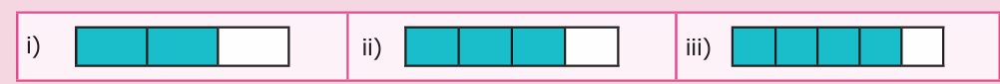
4) write the facts and the represents the dots in the triangle
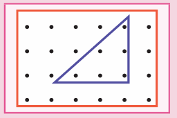
5) find the fractions of the shaded and Unshaded portions in the following
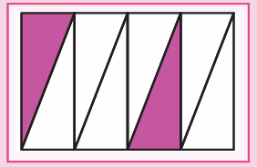
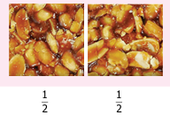
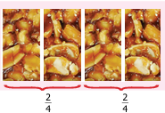
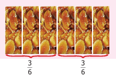
Murali has one peanut bar. He wants to share it equally with Rani. So he divided it into two equal pieces, each one has got one piece out of two, which is half of the peanut bar. They both decided to have half of their share in the morning break and another half in the evening break. now the total number of pieces becomes 4. Each one has two pieces out of 4.That is two divided by 4 which is nothing but half of the peanut bar look at the figures. in both the type of sharing the got only the same hall of the peanut bar. therefore 1 divided by two is equal to 2 divided by 4 . hence 2 divided by 4 is equivalent to 1 divided by 2.
If the peanut had been divided into 6 equal pieces, each one would have got three divided by 6. what about each one share if it is divided into 8 equal pieces? 4 divided by 8, we can observe that, 1 divided by 2 is equal to, two divided by 4, is equal to 3 divided by 6,is equal to, 4 divided by 8, how do we get these equivalent fractions of 1 divided by 2.
1 divided by 2, into 2 divided by 2, is equal to 2 divided by 4,
1 divided by 2, into 3 divided by 3, is equal to 3 divided by 6,
Hence to get equivalent fractions of the given fraction, the numerator and denominator are to be multiplied by the same number.
Activity
Take a rectangular paper. Fold it into two equal parts. Shade one part, write the fraction of it. Again fold it into two halves. Write the fraction for the shaded part. Continue this process 5 times and write the fraction of the shaded part. Establish the equivalent fractions of 1 divided by 2 in the folded paper to your friends.
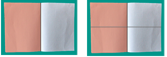
Example 1
Find the equivalent fractions of 3 divided by 4 and 2 divided by 7,
Solutions
Equivalent fractions of three divided by 4,
3 divided by 4, is equal to 3 into 2, whole divided by 4 into 2, is equal to 6 divided by 8,
3 divided by 4, is equal to 3 into 3, whole divided by, 4 into 3, is equal to 9 divided by twelve,
3 divided by 4, is equal to 3 into 4, whole divided by, 4 into 4, is equal to, twelve divided by sixteen,
|
Equivalent fractions of two divided by 7,
2 divided by 7, is equal to 2 into 2, whole divided by 7 into 2, is equal to 4 divided by fourteen,
2 divided by 7, is equal to 2 into 3, whole divided by 7 into 3, is equal to 6 divided by twenty one,
2 divided by 7, is equal to 2 into 4, whole divided by 7 into 4, is equal to 8 divided by twenty eight.
|
Equivalent fractions of 3 divided by 4, three divided by 4 is equal to 6 divided by 8 is equal to 9 divided by 12 is equal to 12 divided by 16.
equivalent fractions of two divided by 7, 2 divided by 7 is equal to 4 divided by 14 is equal to 6 divided by 21 is equal to 8 divided by 28.
Try these
Find the unknown in the following equivalent fractions.
1) Three divided by 5, is equal to 9 desh.
2) desh divided by 7, is equal to 16 divided by 28.
3) desh divided by 3, is equal to 10, divided by 15.
4) 42 divided by 48, is equal to, desh divided by 8.
Fractions are used in life situations such as
To express time has quarter part 3 half past 4 quarter to 5 extra
To say the quarter of work completed as quarter half 3 quarters of the work completed
To say the distance between two places as half a kilometer / 2 and a half kilometer
To express the quantity of ingredients to be used in a recipe as half of the rice taken half of the dhal taken etcetera.
picture
Mathematics Alive Fractions in Real Life |
|
Nine Tenths of water on the earth is salty |
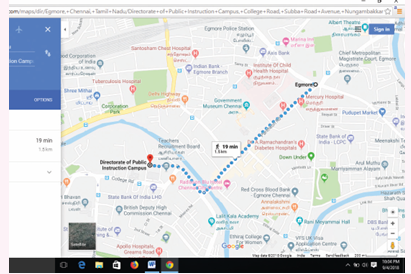
The distance between Chennai Egmore and the Directorate of Public Instruction Campus (DPI) is nearly one and half kilometer |
Think about the situation one
Murugan has scored 7 divided by 10 in science and 9 divided 10 in mathematics test. In which subject he has performed better? It is quiet easy to say his performance is better in mathematics. Because both the tests are out of 10 marks. But can you find the better performance of Murugan between the two test scores such as 9 divided by 10 and 13 divided by 20 in mathematics. we need to convert both that mark as like fractions.
The equivalent fraction of 9 divided by 10 is 18 divided by 20 . Now we can compare the first test score with that of the second test score because both the scores are out of 20 marks. Here 18 greater than 13. So, 18 divided by 20 greater than 13 divided by 20 . Thus, Murugan has performed better in the first test.
Think about the situation 2
In a Hockey tournament, Team A played 6 matches and won 5 matches out of it. Team B played 5 matches and won 4 matches out of it. If both the teams perform consistently in this way, find out which team will win the tournament?
From these we need to see which is greater 5 divided by 6 or 4 divided by 5 ? How can we find this? The total number of matches played by each team differs. By finding the equivalent fractions of divided by 6 and 4 divided by 5 , we can equalize the number of matches played by team A and team B.
5 divided by 6, is equal to 10 divided by 12, is equal to 15 divided by 18, is equal to 20 divided by 24, is equal to 25 divided by 30,
4 divided by 5, is equal to 8 divided by 10, is equal to 12 divided by 15, is equal to 20 divided by 25,is equal to 24 divided by 30,
Note, That the common denominator of equivalent fraction is 30, which is 5 into 6. Or 6 into 5, It is the common multiple of both 5 and 6.
Here 25 divided by 30, greater than 24 divided by 30. So Team A will win the game.

Note
To compare two or more unlike fractions, we have to convert them into like fractions. These like fractions are the equivalent fractions of the given fractions. The denominator of the like fractions is the Least Common Multiple (LCM) of the denominators of the given unlike fractions.
Example 2
Madhu ate 2 divided by 5 of the chocolate bar and Nandhini ate 1 divided by 3, of the chocolate bar. Who has eaten more?
Solution
The portion of the chocolate eaten by Madhu is equal to, 2 divided by 5.
The portion of the chocolate eaten by Nandhini is equal to, 1 divided by 3.
Here the portions of the chocolates eaten by both differ.
To make it same, their equivalent fractions are to be found. Finding the equivalent fractions of, 2 divided by 5, and 1 divided by 3 having common denominators are the same, as finding the least common multiple of the denominators of the given fractions.
Hence 2 divided by 5, is equal to 2 into 3, whole divided by 5 into 3, is equal to 6 divided by 15.
And 1 divided by 3, is equal to 1 into 5, whole divided by 3 into 5, is equal to 5 divided by 15,. So, 6 divided by 15, greater than 5 divided by 15.
Therefore, we can conclude that Madhu has eaten more chocolate bar.
Note
The process of finding the like fractions of the given unlike fractions can be made easier by finding the common multiples of the denominators of the unlike fractions.
Example 3
Vinotha, Mugilarasi, Senthamizh were participating in a water filling competition. Each one was given a bottle of equal volume to fill water in it within 30 seconds. If Vinotha filled 1 divided by 2 portion of her bottle, Senthamizh filled 3 divided by 4 portion of her bottle and Mugilarasi filled 1 divided by 4 portion of her bottle, then who would get the first, second and third prize?
Solution
The equivalent fractions need to be written until the denominator becomes 4 which is the LCM of 2 and 4.
Equivalent fraction of 1 divided by 2 is 2 divided by 4
Vinotha's portion |
Mugilarasi's portion |
Senthamizh's portion |
Vinotha's portion 1 divided by 2, is equal to 2 divided by 4. |
Mugilarasi's portion 1 divided by 4. |
Senthamizh's portion 3 divided by 4. |
Here 1 divided by 4 less than 2 divided by 4 less than 3 divided by 4. Therefore, Senthamizh would get the first prize, Vinotha would get the second prize and Mugilarasi would get the third prize.
Example 4
Arrange 2 divided by 3, 1 divided by 6, 4 divided by 9 , in ascending order.
Solution
Equivalent fractions of 2 divided by 3 are 4 divided by 6, 6 divided by 9, 8 divided by 12, 10 divided by 15, 12 divided by 18.
Equivalent fractions of 1 divided by 6 are 2 divided by 12, 3 divided by 18,
Equivalent fraction of 4 divided by 9 is 8 divided by 18,
Therefore 3 divided by 18, less than 8 divided by 18, less than 12 divided by 18.
The ascending order of given fractions is 1 divided by 6, 4 divided by 9 , 2 divided by 3,
Do you know
Comparison of Unit Fractions:
Unit fractions are fractions having 1 as its numerator. For example compare 1 divided by 7 and 1 divided by 5. One can conclude that 1 divided by 5 greater than 1 divided by 7 by observing the diagram. So, in unit fraction the larger the denominator the smaller will be the fraction. Hence, we conclude that if the numerators are the same in two fractions, the fraction with the smaller denominator is greater of the two.
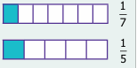
Try these
1. Shade the rectangle for the given pair of fractions and say which is greater among them |
||||||||||||||||||||||||||||
1) 1 divided by 3, and 1 divided by 5, |
2) 2 divided by 5, and 5 divided by 8 |
|||||||||||||||||||||||||||
Shade, 1 divided by 3
|
Shade, 1 divided by 5
|
Shade, 2 divided by 5
|
Shade 5 divided by 8
|
|||||||||||||||||||||||||
1 divided by 3 is desh, than 1 divided by 5 .
That is, 1 divided by 3 desh, 1 divided by 5. |
2 divided by 5 is desh, than 5 divided by 8.
That is, 2 divided by 5 desh, 5 divided by 8. |
|||||||||||||||||||||||||||
2) Which is greater 3 divided by 8, or 3 divided by 5,?
3) Arrange the fractions in ascending order, 3 divided by 5, 9 divided by 10, 11 divided by 15,
4) Arrange the fractions in descending order, 9 divided by 20, 3 divided by 4, 7 divided by twelve.
Think about the situation
Venkat went to buy milk. He bought 1 divided by 2 litre first and then he bought 1 divided by 4 litre. He wanted to find how much milk he bought altogether? In order to find the total quantity of milk, he has to add 1 divided by 2, and 1 divided by 4 . That is 1 divided by 2, plus 1 divided by 4. To add or subtract two unlike fractions, first we need to convert them into like fractions.
Example 5
The teacher had given the same situation mentioned above and asked two students Ravi and Arun to solve it. They came out with the answers for 1 divided by 2, plus 1 divided by 4.
Solution
Ravi’s way |
Arun’s way |
Ravi’s way Common Multiple of 2 and 4 is equal to 4. Equivalent Fractions of 1 divided by 2, is equal to 1 into 2 whole divided by 2 into 2, is equal to 2 divided by 4 Now, add 1 divided by 2, plus 1 divided by 4, is equal to 2 divided by 4, plus 1 divided by 4,
Is equal to 2 plus 1 whole divided by 4 plus 4 is equal to 3 divided by 8,
Therefore Venkat has bought 3 divided by 8 litres of milk.
|
Arun’s way Common Multiple of 2 and 4 is equal to 4. Equivalent Fractions of 1 divided by 2, is equal to 1 into 2, whole divided by 2 into 2 is equal to 2 divided by 4.
Now, add 1 divided by 2 plus 1 divided by 4 is equal to 2 divided by 4 plus 1 divided by 4.
Is equal to 2 plus 1 whole divided by 4, is equal to 3 divided by 4.
Therefore Venkat has bought 3 divided by 4 litres of milk, |
The teacher concludes that Arun’s way is correct. This can be verified by the following diagram.
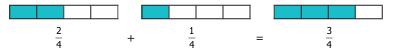
In the above illustration note that while adding two like fractions the total number of parts, open bracket, denominator, close bracket, remains the same and the two shaded parts, open bracket, numerator close bracket, are added
Example 6
Add 2 divided by 3 and, 3 divided by 5.
Solution
These are unlike fractions, aren’t they ? So first we need to convert them into like fractions ? Is it possible ? Yes, always. How do we do so ? The common multiple of 3 and 5 is 15. Hence, we find the equivalent fractions of 2 divided by 3 and 3 divided by 5 with denominator 15.
2 divided by 3, is equal to 2 into 5, whole divided by 3 into 5, is equal to 10 divided by 15,
3 divided by 5, is equal to 3 into 3, whole divided by 5 into 3, is equal to 9 divided by 15,
2 divided by 3, plus 3 divided by 5, is equal to 10 divided by 15, plus 9 divided by 15, is equal to 19 divided by 15.
In the above example, the common denominator is 15 open bracket 3 into 5 close bracket . Now we observe that the numerator and denominator of the first fraction is multiplied by 5 which is the denominator of the second fraction. In the same way, the second fraction is multiplied by 3 which is the denominator of the first fraction. Now in finding the numerator of both the like fractions, we need to multiply the numerator of the first fraction by 5 and the numerator of the second by 3. In the denominator, 3 into 5 and 5 into 3 are of course the same. Thus, the technique of finding the like fraction is called Cross Multiplication technique.
That is, 2 divided by 3, plus 3 divided by 5, is equal to open bracket 2 into 5, close bracket, plus open bracket 3 into 3, close bracket, whole divided by 3 into 5, is equal to 10 plus 9, whole divided by 15 is equal to 19 divided by 15.
Example 7
Simplify, 3 divided by 7, plus 2 divided by 3.
Solution
By Cross Multiplication technique, 3 divided by 7, plus 2 divided by 3, is equal to open bracket 3 into 3, close bracket plus open bracket 2 into 7, close bracket whole divided by, 7 into 3, is equal to 9 plus 14 whole divided by 21 is equal to 23 divided by 21.
Think about the situation
Vani has 3 divided by 4 litre of water in her bottle. She drank 1 divided by 2 litre of it. How much water is left in the bottle? To find the amount of water remaining in her bottle, the amount of water consumed by her must be subtracted from the amount of water she had initially. That is 3 divided by 4 minus 1 divided by 2. This is solved in the following example.
Example 8
Simplify: 3 divided by 4 minus 1 divided by 2
Solution
Common multiple of 2 and 4 is 4
Equivalent fraction of 1 divided by 2 is
1 divided by 2 is equal to 1 into 2 whole divided by 2 into 2 is equal to 2 divided by 4
Now, 3 divided by 4 minus 1 divided by 2 is equal to 3 divided by 4 minus 2 divided by 4 is equal to 3 minus 2 whole divided by 4 is equal to 1 divided by 4
Therefore, Vani has 1 divided by 4 amount of water in the bottle. This can be verified by the following diagram.
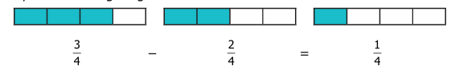
Example 9
Find the difference between 3 divided by 4 and 2 divided by 7 .
Solution
To find the difference, first we should know, which is bigger between the two given fractions ? How do we find out ?
We know that comparing 'like' fractions is easy, but these are unlike fractions. So, let us convert them into 'like' fractions and compare. Again, we use common multiple 28 open bracket 4 into 7 close bracket. to get equivalent fractions of 3 divided by 4, and 2 divided by 7 as 21 divided by 28, and 8 divided by 28 . Here, 21 divided by 28 greater than 8 divided by 28 and hence 3 divided by 4 greater than 2 divided by 7.
Therfore, 3 divided by 4 minus 2 divided by 7, is equal to 21 divided by 28, minus 8 divided by 28 is equal to 13 divided by 28.
This can also be done by Cross Multiplication
technique as 3 divided by 4, minus 2 divided by 7, is equal to open bracket 3 into 7, close bracket minus open bracket 2 into 4, close bracket whole divided by 4 into 7, is equal to 21 minus 8 whole divided by 28, is equal to 13 divided by 28.
Try these
1) 2 divided by 3 plus 5 divided by 7
2) 3 divided by 5 minus 3 divided by 8
Activity
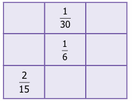
Using the given fractions 1 divided by 5, 1 divided by 6, 1 divided by 10, 1 divided by 15, 2 divided by 15, 4 divided by 15, 1 divided by 30, 7 divided by 30, and 9 divided by 30, fill in the missing ones in the given 3 into 3 square in such a way that the addition of fractions through rows, columns and diagonals give the same total 1 divided by 2 .
Think about the situation
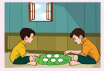
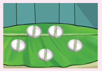
Iniyan had 5 idlis for his breakfast. When he was about to eat, his friend Abdul came. He wanted to share it equally with his friend Abdul. Both of them have taken 2 each and 1 divided by 2 of the remaining idli.
Each one has eaten 2 full idlis and 1 divided by 2 idli. This can be represented as 2 plus 1 divided by 2 is equal to 2, 1 divided by 2. This representation is called a mixed fraction. Thus, a mixed fraction is the sum of a whole number and a proper fraction. Also we can express an improper fraction as a mixed fraction by dividing the numerator by denominator to get quotient and remainder. Thus, any mixed fraction can be written as
Quotient plus Remainder divided by Divisor is equal to Quotient into Remainder divided by Divisor.
Another way to share these idlis is as follows: Now can you see how many halves are there in 5 idlis. There are 10 halves. If we share these 1 divided by 2 idlis each time, then Iniyan and Abdul has eaten 5 halves each. That is 1 divided by 2, plus 1 divided by 2, plus 1 divided by 2, plus 1 divided by 2, plus 1 divided by 2 , is equal to 5 divided by 2. which is same as 2, 1 divided by 2, is equal to 2 plus 1 divided by 2, is equal to open bracket 2 into 2, close bracket plus 1 whole divided by 2, is equal to 5 divided by 2. Thus, any improper fraction can be written as mixed fraction as follows
Improper fraction is equal to. open bracket Whole number into Denominator close bracket, plus Numerator whole divided by, Denominator.
Try these
1. Complete the following table. The first one is done for you.
Mixed Fraction |
Diagrams |
Improper Functions |
Mixed Fraction 1) 3 circles are completely shaded. 1 divided by 2 of another circle is shaded. That is totally 3 into 1 divided by 2 circles are shaded. |
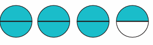 |
Improper Functions
Each circle is divided into halves. There are totally 7 half circles shaded which is equal to 7 divided by 2 . |
Mixed Fraction
2) desh rectangles are completely shaded. desh portion of another rectangle is shaded. That is totally desh rectangles are shaded. |
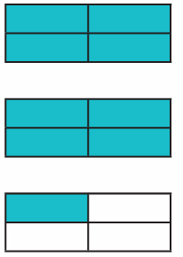 |
Improper Functions
Each rectangle is divided into 1 divided by 4 or quarters or one fourth. There are totally desh quarters of rectangles shaded which is equal to desh . |
Mixed Fraction
3) desh hexagons are completely shaded. desh portion of another hexagon is shaded. That is totally desh hexagons are shaded. |
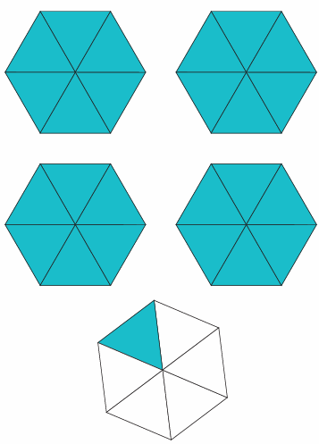 |
Improper Functions
Each hexagon is divided into 1 divided by 6, or one sixth. There are totally desh one sixths of hexagons shaded which is equal to desh. |
Example ten
Convert 5, 3 divided by 7, into an improper fraction.
Solution
Improper fraction is equal to open bracket Whole number into Denominator close bracket plus Numerator whole divided by Denominator
5, 3 divided by 7, is equal to open bracket 5 into 7, close bracket plus 3 whole divided by 7,
is equal to 35 plus 3, whole divided by 7, is equal to 38 divided by 7.
Example 11
Convert 17 divided by 3, into a mixed fraction.
Solution
Divisor arrow mark right direction,17 divided by 3, quotient 5, remainder 2,
17 divided by 3 is equal to Quotient, Remainder by Divisor is equal to 5, 2 by 3
Think
1) Are 5, 2 divided by 3, and 5, 4 divided by 6, equal?
2) 3 divided by 2, not equal to , 3, 1 divided by 2, why?
Try These
1) Convert 3, 1 divided by 3 into improper fraction.
2) Convert 45 divided by 7 into mixed fraction.
Think about the situation
In a joint family of Saravanan, during pongal festival celebration, his grandfather, his father and himself wanted to wear the same colour shirt. The cloth needed for stitching 3 shirts are 2, 3 divided by 4 meters , 2, 1 divided by 2 meters, and 1, 1 divided by 4 meters, respectively. How many meters of cloth has to be purchased in total? So the total length of the cloth bought by his father is 2, 3 divided by 4 plus 2, 1 divided by 2 plus 1, 1 divided by 4 . This is solved in the following example.
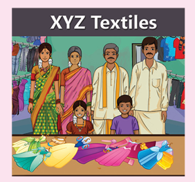
Example 12
Saravanan’s father bought 2, 3 divided by 4 metres, 2, 1 divided by 2 metres and 1, 1 divided by 4 metre, of cloth. Find the total length of the cloth bought by him?
Solution
Total length of the cloth is equal to open bracket 2, 3 divided by 4, plus 2, 1 divided by 2, plus 1, 1 divided by 4, close bracket metres.
First we add whole numbers: 2 plus 2 plus 1, is equal to 5 metres.
Then, add the fractions:
open bracket 3 divided by 4, plus 1 divided by 2, plus 1 divided by 4, close bracket is equal to 3 divided by 4, plus 2 divided by 4, plus 1 divided by 4, is equal to 3 plus 2, plus 1, whole divided by 4, is equal to 6 divided by 4, is equal to 3 into 2, whole divided by 2 into 2 is equal to 3 divided by 2 is equal to 1, 1 divided by 2 metres.
Therefore, the total length of the cloth bought is, equal to 5 plus 1 plus 1 divided by 2, is equal to 6, 1 divided by 2 metres.
Example 13
Add: 3, 2 divided by 4 plus 7, 2 divided by 5,
Solution,
3, 2 divided by 4, plus 7, 2 divided by 5, is equal to 3 plus, 2, divided by 4, plus 7 plus 2 divided by 5.
is equal to, 3 plus 7 plus, open bracket 2 divided by 4, plus 2 divided by 5, close bracket
is equal to, 10 plus open bracket 10 divided by 20 plus 8 divided by 20 close bracket
is equal to, 10 plus 18 divided by 20, is equal to 10 plus 9, divided by 10 is equal to 10, 9 divided by 10.
Think about the situation
One day Anitha’s mother bought 5, 1 divided by 2 litres of milk. She has used only 3, 1 divided by 4 litres of milk to prepare payasam. How much milk is left? That is 5,1 divided by 2 minus 3, 1 divided by 4.
Example 14
In the above situation, find the quantity of milk left over. So, subtract 3, 1 divided by 4 from 5, 1 divided by 2
Solution
The quantity of milk left over is equal to 5, 1 divided by 2, minus 3, 1 divided by 4,
Here, note that 5 greater than 3, and 1 divided by 2, greater than 1 divided by 4,
The whole numbers 5 and 3 and
the fractional numbers 1 divided by 2, and 1 divided by 4,
can be subtracted separately
So 5, 1 divided by 2 minus 3, 1 divided by 4, is equal to open bracket 5 plus,1 divided by 2 close bracket, minus open bracket 3 plus,1 divided by 4 close bracket, is equal to , open bracket of 5 minus 3 close bracket, plus open bracket 1 divided by 2, minus 1 divided by 4, close bracket.
is equal to, 2 plus, open bracket 2 divided by 4, minus 1 divided by 4, close bracket,
Since the equivalent fraction of 1 divided by 2 , is 2 divided by 4.
Is equal to 2 plus, 1 divided by 4, is equal to, 2, 1 divided by 4 litres
Note
This method is applicable only when both integral and fractional parts of minuend is greater than that of the subtrahend.
Example 15
Simplify,
9, 1 divided by 4, minus 3, 5 divided by 6,
Solution
Here 9 greater than 3 and 1 divided by 4 less than 5 divided by 6, So we proceed as follows:
We convert the mixed fraction into improper fraction and then subtract.
9, 1 divided by 4, is equal to, open bracket 9 into 4, close bracket, plus, 1 whole divided by 4, is equal to 37 divided by 4.
and 3, 5 divided by 6, is equal to, open bracket of 3 into 6 close bracket, plus 5, whole divided by 6 is equal to 23 divided by 6.
Common multiple of 4 and 6 is 12.
Now, 37 divided by 4, minus 23 divided by 6, is equal to 37 into 3, whole divided by 12, minus 23 into 2 whole divided by 12.
Is equal to 111 divided by 12, minus 46 divided by 12, is equal to 65 divided by 12, is equal to 5, 5 divided by 12.
Try these
1) Find the sum of 5, 4 divided by 9 and 3, 1 divided by 6.
2) subtract 7, 1 divided by 6 from 12, 3 divided by 8.
3) subtract the sum of 6, 1 divided by 6 and 3, 1 divided by 5, from the sum of, 9, 2 divided by 3, and 2, 1 divided by 2.
Think about the situation 1 (Multiplication of a fraction by a whole number)
Sunitha wanted to give 1 divided by 4 kilogram of sweets to each of her 3 friends. So she went to a sweet stall and she asked the salesman to give three 1 divided by 4 kilogram packets of sweets, how much sweet did she buy?
Solution,
Weight of three 1 divided by 4, kilo gram packets of sweets, is equal to 1 divided by 4, plus 1 divided by 4, plus 1 divided by 4, is equal to 1 plus 1 plus 1 whole divided by 4, is equal to 3 divided by 4, kilo gram.
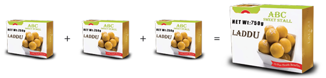
We can illustrate this in the following diagram. In each of these the shaded part is, 1 divided by 4, of a circle. Can you find the shaded parts in 3 circles together?
To know the fraction of shaded part in all the three circles, we add the fractions which are represented in each of the circles. So 3 into 1, divided by 4, is equal to 3 divided by 4.
The adjacent circle represents 3 divided by 4 parts of the circle,
Think about the situation 2 (Multiplication of a fraction using the operator ‘of)
Kannan has 30 beads and Kanmani has one sixth of it. How many beads does Kanmani have?
Solution,
The number of beads that Kanmani has, is equal to 1 divided by 6 of 30 beads,
Is equal to 1 divided by 6, into 30, Is equal to 30 divided by 6,
Is equal to 5 beads.
Think about the situation 3 (Multiplication of a fraction by another fraction)
Sunitha bought three 1 divided by 4 kilo gram sweet packets, for her three friends from a sweet stall. But 6 of her friends had come to her home. So she decided to divide each 1 divided by 4 kg sweet packets into halves. If she has done in that way, what would be the weight of the sweet packet that each one of her friend will receive?
Solution
The weight of the sweet packets that each one of her friends will receive is equal to half of 1 divided by 4 kilo gram.
Is equal to 1 divided by 2, of 1 divided by 4 kilo gram.
Is equal to 1 divided by 2, into 1 divided by 4
1 divided by 2, of 1 divided by 4, means The product 1 divided by 2 and 1 divided by 4 , This can be illustrated as follows. We shade 1 part out of 4 parts which represents 1 divided by 4 . Now divide this horizontally into 2 equal parts and shade one part of it.
![image, This image has two Pictures, The first picture shows a rectangular box, divided. into four equal Parts by vertical lines, in which one part is shaded and is also written as one by four Second Picture, shows a rectangular box, divided into eight equal partis by three Vertical lines, and one horizontal line in which five parts are Shaded. Four parts are shaded horizontally in green Colour, first two vertical parts are shaded in red Colour, Now the first part is coloured in both red and green Colour and is also written as one by eight.](images/image50.png)
Here, the double shaded part represents the product 1 divided by 8 and it is got by finding the product of the numerators and the product of denominators as follows:
1 divided by 2, into 1 divided by 4, is equal to 1 into 1, whole divided by 2 into 4, is equal to 1 divided by 8.
Example 16
Maruthu, a milk man has 4 bottles of milk each containing 1, 1 divided by 2 litres. How much milk does he have in all?
Solution
Since Maruthu has 4 bottles of milk and each containing 1, 1 divided by 2 litres, he has 4 times of 1, 1 divided by 2 litres of milk.
1, 1 divided by 2, into 4, is equal to open bracket of 1 plus 1 divided by 2, close bracket,into 4 is equal to 4 plus 4, divided by 2,
Is equal to 4 plus 2 is equal to 6 litres.
Example 17
A man wants to fill 3, 3 divided by 4 kilo gram of rice equally in 3 bags. How much rice does each bag contain?
Solution
Each bag contains 1 divided by 3 of 3, 3 divided by 4 kilo gram of rice.
That is 1 divided by 3 into 3, 3 divided by 4, is equal to 1 divided by 3, into 3 open bracket of 3 plus 3 divided by 4 close bracket, is equal to open bracket of 3 into 3 close bracket, plus open bracket of 1 divided by 3 into 3 divided by 4 close bracket,
Is equal to 1 plus 1 divided by 4 is equal to 1, 1 divided by 4 kg.
Think
2, 1 divided by 4, into 3 is not equal to, 6, 1 divided by 4, Why?
Example 18
In a juice shop, if a man prepared 1, 1 divided by 2 litres of juice from 1 kg of oranges, then how many litres of juice can be prepared from 12, 3 divided by 4 kg of oranges?
Solution
The quantity of juice prepared from 1kg of oranges is equal to 1, 1 divided by 2 litres.
The quantity of juice prepared from 12, 3 divided by 4 kg of oranges is equal to 12, 3 divided by 4 into 1, 1 divided by 2.
Is equal to 51 divided by 4 into 3 divided by 2 is equal to one hundred and fifty three , divided by 8
Is equal to 19, 1 divided by 8 litres
Try these
1) Simplify: 35 into 3 divided by 7
2) Find the value of 1 divided by 5 of 15.
3) Find the value of 1 divided by 3 of 3 divided by 4
4) Multiply 7, 3 divided by 4 by 5, 1 divided by 2.
Activity
Take a paper. Fold it into 4 parts vertically of equal width. Shade one part of it with red. Then, fold it into 3 parts horizontally of equal width. Shade two parts of it with blue. Now, you count the number of shaded grids which have both the colours.
(Hint: The number of grids shaded in both colours out of the total number of grids gives the product 2 divided by 12, of 2 divided by 3 and 1 divided by 4 )

Think about the situation 1
A camp was organized in a school in which 12 students participated. The camp leader wanted to divide them into groups of 2 students. How many groups were there?
There were 6 groups which was got by the division of 12 by 2.
That is 12 divided by 2 is equal to 6 which means there are six 2 s in 12.
If the camp leader distributes 6 litres of water in 1 divided by 2 litre water bottles to the students, then how many students will get water bottles? This means finding how many 1 divided by 2 litres are there in 6 litres. For this we need to calculate 6 divided 1 by 2 .
Solution Let us describe the situation
Amount of water |
Picture |
Amount of water distributed |
Method of finding it |
Number of persons received |
Amount of water, 6 litres |
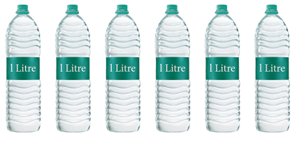 |
Amount of water distributed, 1 litre |
Method of finding it , 6 divided 1 |
Number of persons received, 6 |
Amount of water, 6 litres |
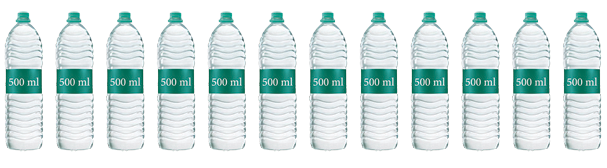 |
Amount of water distributed, 1 divided by 2 litre |
Method of finding it,
6 divided 1 by 2 |
Number of persons received,
12 |
Amount of water, 6 litres |
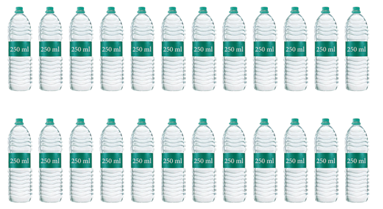 |
Amount of water distributed, 1 divided by 4 litre |
Method of finding it,
6 divided 1 by 4 |
Number of persons received, 24 |
This means that if you share 6 litres of water into 1 litre bottles, 6 persons can get water. If you share in 1 divided by 2 litre water bottles, 12 persons can get water. If you share it in 1 divided by 4 litre water bottles, 24 persons can get water. That is
6 divided 1 , is equal to 6 |
6 divided 1, by 2 is equal to 12 |
6 divided 1 ,by 4 , is equal to 24 |
We can illustrate this in the following diagram. We divide each circle into halves such that each part is 1 divided by 2 of the whole. The number of such halves would be 6 divided 1 by 2. In the figure how many halves do you see? There are 12 halves. So 6 divided 1 by 2 is equal to 6 into 2 is equal to 12
As one circle has 2 halves, 6 circles will have 12 halves is equal to 6 into 2. Therefore, 6 divided 1 by 2 is equal to 6 into 2 is equal to 12.
Here, we can observe that, dividing a whole number 6 by a fraction 1 divided by 2 is the same as multiplying a whole number 6 by 2, where 2 is the reciprocal of 1 divided by 2 . Generally, dividing a number by a fraction is the same as multiplying that number by the reciprocal of the fraction. Let us discuss the same situation in another way. Let us take a bar of length 12 centimeter How many 2 cm bars are there in a 12 centimeter bar?
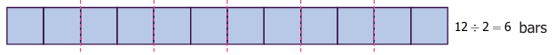
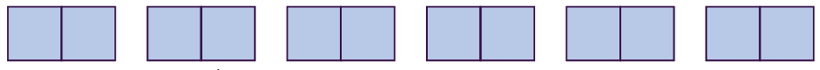
Now find how many 1 divided by 2 centimeter bars are there in a 12 centi meter bar?
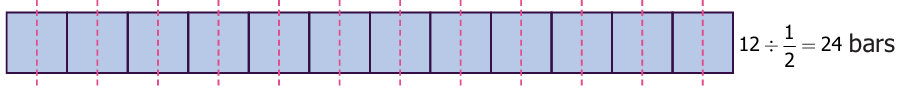
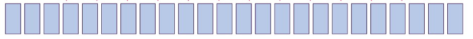
Let us observe and complete the following
1) 3 divided by 7, into 7 divided by 3, is equal to 21 divided by 21, is equal to 1.
2) 1 divided by 9, into 9 is equal to 9 divided by 9, is equal to 1.
3) 8 into 1 divided by 8 is equal to 8 divided by 8 is equal to question mark.
4) 13 divided by 4 into question mark is equal to 1.
5) 4 divided by 3 into question mark, is equal to 1.
From the above, we can see that the Product of a fraction and its reciprocal is always 1.
Example 19
Kandan shares 1 divided by 2 piece of a cake between 2 persons. What will be the share of each?
Solution
To know the share, we need to find 1 by 2 divided 2
1 by 2 divided 2 is equal to 1 divided by 2 into 1 divided by 2 ( reciprocal of 2 is 1 divided by 2 ).
Is equal to 1 divided by 2 into 1 divided by 2 is equal to 1 into 1 whole divided by 2 into 2 is equal to 1 divided by 4.
Example 20
Divide 4, 1 divided by 2 by 3, 1 divided by 2.
Solution
4, 1 by 2 divided by 3, 1 by 2 is equal to 9 by 2 divided by 7 by 2.
Is equal to 9 divided by 2 into 2 divided by 7, open bracket, reciprocal of 7 divided by 2 is 2 divided by 7, close bracket
Is equal to 9 divided by 7.
Try these
1) How many 6 s are there in 18?
2) How many 1 divided by 4, are there in 5?
3) 1 by 3 divided 5 is equal to, question mark?
Example 21
An oil tin contains 7, 1 divided by 2 litre of oil which is poured in, 2, 1 divided by 2 litre bottles. How many bottles are required to fill, 7, 1 divided by 2 litre of oil?
Solution
The number of bottles required is equal to, 15 by 2, divided by 5, by 2, is equal to 15 by 2 into 2 by 5. Open bracket reciprocal of 5 divided by 2 is 2 divided by 5 close bracket.
Is equal to 3 bottles.
Example 22
A rod of length 6 meter is cut into small rods of length 1, 1 divided by 2 meter each. How many small rods can be cut?
Solution
The number of small rods is equal to 6 divided by 1, 1 by 2.
Is equal to 6 divided by 3 by 2
Is equal to 6 into 2 divided by 3
Open bracket reciprocal of 3 divided by 2 is 2 divided by 3 close bracket
Is equal to 4 rods
Try these
1) Find the value of 5 divided by 2, 1 by 2.
2) Simplify: 1, 1 by 2 divided by 1 by 2
3) Divide 8, 1 by 2 by 4, 1 by 4

Fractions
Expected Outcome
![image, New Problem, There were 3 Red balls, 8 Blue balls and 8 Yellow balls in an urn. Express in fraction for no. of (1) Red Balls (2) Blue Balls and (3) Yellow balls. Number of Red Balls , is equal to 3, Number of Blue balls, is equal to 8, Number of Yellow Balls, is equal to 8, Total No of Balls is equal to 3 plus 8 plus 8 is equal to 19, Click in the check box to see the answer, Fraction of Red Balls is equal to, Fraction of Blue Balls is equal to, Fraction of Yellow Balls is equal to, Number of Yellow Balls is Equal to 8, Total No. of Balls is equal to 19](images/image63.png)
Step 1
Open the Browser by typing the URL Link given below (or) Scan the QR Code. GeoGebra work sheet named “Fraction Basic” will open. Click on New Problem and solve the problem
Step 2
Click the check boxes on right hand side bottom to check respective answers,
![image, New Problem, There were 2 Red balls, 2 Blue balls and 4 Yellow balls in an urn. Express in fraction for no. of (1) Red Balls (2) Blue Balls and (3) Yellow balls. Number of Red Balls , is equal to 2, Number of Blue balls, is equal to 2, Number of Yellow Balls, is equal to 4, Total No of Balls is equal to 2 plus 2 plus 4 is equal to 8, Click in the check box to see the answer, Fraction of Red Balls is equal to, Fraction of Blue Balls is equal to, Fraction of Yellow Balls is equal to, Number of Yellow Balls is Equal to 8,](images/image64.png)
![image, New Problem, There were 8 Red balls, 7 Blue balls, and 5 Yellow balls, in an urn. Express in fraction for no. of (1) Red Balls (2) Blue Balls and (3) Yellow balls. Number of Red Balls , is equal to 8, Number of Blue balls, is equal to 7, Number of Yellow Balls, is equal to 5, Total No of Balls is equal to 8 plus, 7 plus, 5, is equal to 20, Click in the check box to see the answer, Fraction of Red Balls is equal to, Fraction of Blue Balls is equal to, Fraction of Yellow Balls is equal to, Number of red Balls is Equal to 8, divided by Total No. of Balls is equal to 20](images/image65.png)
Browse in the link: Fraction Basic: https://ggbm.at/jafpsnjb or Scan the QR Code.
This puzzle involves fraction in Tamil song and its explanation |
|
Kattiyaal ettu katti, Cal arai mukkal maatru, Viyaabaari senru vittaar, Sirupillai moonru parkal, Kattiyum book konaathu, Kanakkilum pisc koNaathu, Kattiyaai bakara vallaar, kaNakkilum vallaar raavaar
|
Explanation A jaggery merchant had 8 jaggery balls, with different weights such as 1 by 4 kilo gram 1 by 2 kilo gram and 3 by 4 kilo gram. He called his 3 children and asked them to share those jaggery balls equally (in weight). How did the children share it equally among themselves? (Hint, The number of jaggery balls with the given weights are 5, 2 and 1 respectively.) |
Exercise 1 point 1
1. Fill in the blanks
1) 7, 3 divided by 4 plus 6, 1 divided by 2, dash.
2) The sum of a whole number and a proper fraction is called, dash.
3) 5, 1 divided by 3 minus 3, 1 divided by 3 is equal to dash.
4) 8 divided 1 by 2 equal to dash.
5) The number which has its own reciprocal is
2) Say True or False
1) 3, 1 divided by 2 can be written as 3 plus 1 divided by 2 .
2) The sum of any two proper fractions is always an improper fraction.
3) The mixed fraction of 13 divided by 4 is 3, 1 divided by 4 .
4) The reciprocal of an improper fraction is always a proper fraction.
5) 3, 1 divided by 4 into 3, 1 divided by 4, is equal to 9, 1 divided by 16.
3) Answer the following:
1) Find the sum of 1 divided by 7 and 3 divided by 9 .
2) What is the total of 3, 1 divided by 3, and 4, 1 divided by 6 ?
3) Simplify : 1, 3 divided by 5, plus 5, 4 divided by 7, .
4) Find the difference between 8 divided by 9, and 2 divided by 7, .
5) Subtract 1, 3 divided by 5, from 2, 1 divided by 3.
6) Simplify : 7, 2 divided by 7, minus 3, 4 divided by 21 .
4) Convert mixed fractions into improper fractions and vice versa:
1) 3, 7 divided by 18.
2) 99 divided by 7
3) 47 divided by 6
4) 12, 1 divided by 9
5) Multiply the following:
1) 2 divided by 3 into 6
2) 8, 1 divided by 3 into 5
3) 3 divided by 8 into 4 divided by 5
4) 3, 5 divided by 7 into 1, 1 divided by 13
6) Divide the following:
1) 3 by 7 divided by 4
2) 4 by 3 divided by 5 by 9.
3) 4, 1 by 5 divided by 3, 3 by 4.
4) 9, 2 by 3 divided by 1, 2 by 3
7) Gowri purchased 3, 1 divided by 2 kilo gram of tomatoes, 3 divided by 4 kilo gram of brinjal and 1, 1 divided by 4 kilo gram of onion. What is the total weight of the vegetables she bought?
8) An oil tin contains 3, 3 divided by 4 litre of oil of which 2, 1 divided by 2 litre of oil is used. How much oil is left over?
9) Nilavan can walk 4, 1 divided by 2 km in an hour. How much distance will he cover in 3, 1 divided by 2 hours?
10) Ravi bought a curtain of lenth 15, 3 divided by 4 meter. If he cut the curtain into small pieces each of length 2, 1 divided by 4 meter, then how many small curtains will he get?
11) Which of the following statement is incorrect?
a) 1 divided by 2 greater than 1 divided by 3
b) 7 divided by 8 greater than 6 divided by 7
c) 8 divided by 9 less than 9 divided by 10
d) 10 divided by 11 less than 9 divided by 10
12) The difference between 3 divided by 7 and 2 divided by 9 is
a) 13 divided by 63
b) 1 divided by 9
c) 1 divided by 7
d) 9 divided by 16
13) The reciprocal of 53 divided by 17 is
a) 53 divided by 17
b) 5, 3 divided by 17
c) 17 divided by 53
d) 3, 5 divided by 17
14) If 6 divided by 7 is equal to A divided by 49 , then the value of A is
a) 42
b) 36
c) 25
d) 48
15) Pugazh has been given four choices for his pocket money by his father. Which of the choices should he take in order to get the maximum money?
a) 2 divided by 3 of Rupees. One hundred and fifty
b) 3 divided by 5 of Rupees. One hundred and fifty
c) 4 divided by 5 of Rupees. One hundred and fifty
d) 1 divided by 5 of Rupees. One hundred and fifty
Exercises 1 point 2
Miscellaneous Practice problems 
1) Sankari purchased, 2, 1 divided by 2 meter cloth to stich a long skirt and , 1, 3 divided by 4 meter cloth to stitch blouse. If the cost is Rupees. One hundred and twenty per meter then find the cost of cloth purchased by her.
2) From his office, a person wants to reach his house on foot which is at a distance of 5, 3 divided by 4 km. If he had walked 2, 1 divided by 2 km, how much distance still he has to walk to reach his house?
3) Which is smaller? The difference between, 2, 1 divided by, 2 and 3, 2 divided by, 3 or the sum of 1,1 divided by 2 and 2, 1 divided by 4 .
4) Mangai bought 6, 3 divided by 4 kilo gram of apples. If Kalai bought 1, 1 divided by 2 times as Mangai bought, then how many kilograms of apples did Kalai buy?
5) The length of the staircase is 5, 1 divided by 2 meter. If one step is set at 1 divided by 4 meter, then how many steps will be there in the staircase?
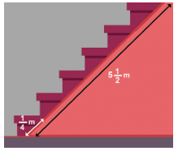
Challenge Problems
6) By using the following clues, find who am I?
1) Each of my numerator and denominator is a single digit number.
2) The sum of my numerator and denominator is a multiple of 3.
3) The product of my numerator and denominator is a multiple of 4.
7) Add the difference between 1, 1 divided by 3 and 3, 1 divided by 6 and the difference between 4, 1 divided by 6 and 2, 1 divided by 3 .
8) What fraction is to be subtracted from 9, 3 divided by 7 to get 3, 1 divided by 5 ?
9) The sum of two fractions is 5, 3 divided by 9 . If one of the fractions is 2, 3 divided by 4 , find the other fraction.
10) By what number should 3, 1 divided by 16 be multiplied to get 9, 3 divided by 16 ?
11) Complete the fifth row in the Leibnitz triangle which is based on subtraction.
(Hint, 1 divided by 2, minus 1 divided by 3, is equal to, 1 divided by 6, 1 divided by 3 minus 1 divided by 12, is equal to 1 divided by 4,
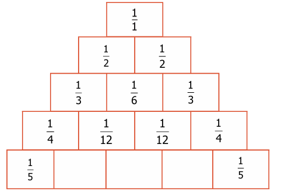
12) A painter painted 3 divided by 8 of the wall of which one third is painted in yellow colour. What fraction is the yellow colour of the entire wall?
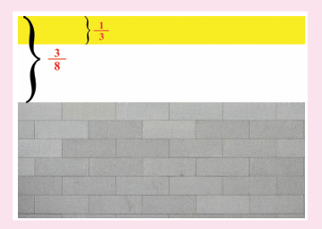
]13) A rabbit has to cover 26, 1 divided by 4 meter to fetch its food. If it covers ,1, 3 divided by 4 meter in one jump, then how many jumps will it take to fetch its food?.
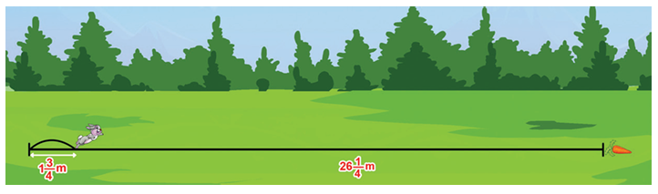
14) Look at the picture and answer the following questions:
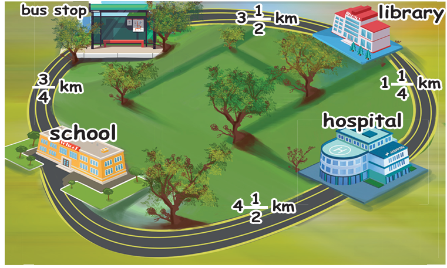
1) What is the distance from School to Library via Bus stop?
2) What is the distance between School and Library via Hospital?
3) Which is the shortest distance between (1) and (2)?
4) The distance between School and Hospital is desh times the distance between School and Bus stop.
Fractions is a part of a whole. The whole may be a single object or a group of objects.
Equivalent fractions are got by multiplying the numerator and denominator of a given fraction by the same number.
Unlike fractions can be added or subtracted by converting them into 'like fractions'.
Mixed fraction is the sum of a whole number and a proper fraction.
Product of two fractions is equal to Product of their numerators divided by Product of their denominators .
The numerator and denominator of a fraction are interchanged to get its reciprocal.
Dividing a number by a fraction is the same as multiplying that number by the reciprocal of the fraction.